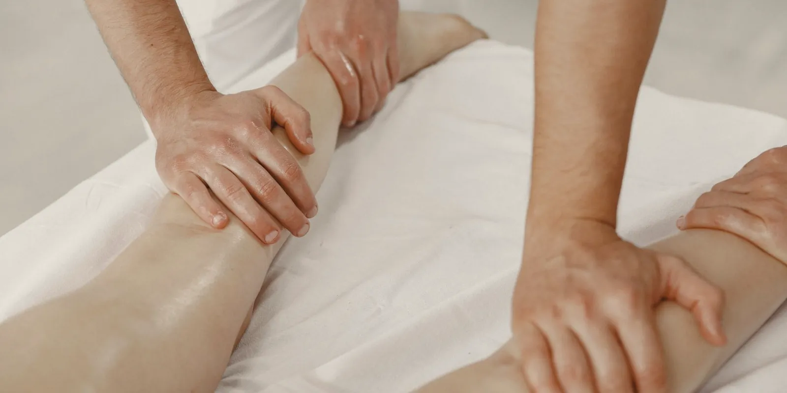

Tratamiento de várices sin cirugía: guía completa
Si te acaban de hablar de várices o llevas tiempo posponiendo la consulta, esta guía reúne en un solo lugar todo lo que hoy se puede hacer sin pasar por cirugía. Te explicamos cómo se elige entre las distintas opciones, qué esperar de cada una y a qué artículo ir si quieres profundizar en la que más te interese.

Si tus piernas muestran venas hinchadas y azuladas, seguro ya te preguntaste cuál es el tratamiento de várices más adecuado para ti. La respuesta corta: hoy existen varias opciones eficaces que no requieren cirugía tradicional ni hospitalización. Cuál te conviene se decide según cómo esté tu circulación por dentro, no según lo que le funcionó a alguien más. De aquí en adelante vas a encontrar cada opción explicada con calma, para que llegues a tu valoración con las preguntas correctas.
¿Por qué aparecen las várices?
Las várices son venas dilatadas y retorcidas que aparecen, sobre todo, en las piernas. En la mayoría de los casos son la señal visible de un problema de fondo: las válvulas internas de la vena, que normalmente evitan que la sangre se devuelva, se debilitan y dejan que se acumule. A eso se le llama insuficiencia venosa, y es la causa más frecuente detrás de las várices. Factores como la herencia familiar, los cambios hormonales, la edad, pasar muchas horas de pie o sentada y el sobrepeso aumentan el riesgo de que aparezcan. Si quieres entender a fondo por qué se forman y qué las diferencia de otros problemas circulatorios, puedes revisar nuestro artículo sobre por qué aparecen las várices y cómo se tratan.
Cómo se elige el tratamiento de várices adecuado
Antes de hablar de técnicas, vale la pena aclarar algo importante: la elección del tratamiento de várices nunca se hace "a ojo". El estudio de referencia es el eco doppler venoso, una ecografía indolora y sin radiación que muestra cómo circula la sangre en tus venas y en qué puntos hay reflujo. Ese mapa le muestra al especialista qué venas están comprometidas, de qué tamaño son y qué tan profundas están. Con esa información se decide qué opción —o combinación de opciones— tiene sentido para tu caso.
Esto explica por qué dos personas con várices visibles pueden recibir indicaciones distintas: no es que un tratamiento sea mejor en términos absolutos, sino que cada técnica está pensada para un tipo de vena y una situación particular. La valoración de insuficiencia venosa es siempre el punto de partida, y de ahí se construye el plan.
Estas son las opciones sin cirugía que existen hoy
Durante muchos años, tratar las várices significaba una cirugía con hospitalización para extraer la vena completa. Hoy es distinto: buena parte de los casos se resuelve con procedimientos mínimamente invasivos, casi siempre ambulatorios, con anestesia local y una recuperación mucho más rápida. A continuación te contamos en qué consiste cada uno.
Escleroterapia
Consiste en inyectar, con una aguja muy fina, una solución dentro de la vena problemática. Esa solución irrita la pared interna de la vena y hace que se cierre; con el tiempo, el cuerpo la reabsorbe y la sangre se redirige hacia venas sanas. Es una de las técnicas más usadas para arañitas vasculares y várices pequeñas o medianas, sobre todo cuando ya no responden solo a medidas como las medias de compresión. Si quieres conocer el paso a paso del procedimiento, la recuperación y los cuidados posteriores, tenemos una guía dedicada: escleroterapia: en qué consiste el tratamiento de várices.
Ablación con láser endovenoso
En este procedimiento se introduce una fibra muy delgada dentro de la vena afectada y se aplica energía láser desde adentro, lo que sella la vena y hace que, con el tiempo, deje de ser funcional y el organismo la reabsorba. Se usa sobre todo en várices medianas o grandes, relacionadas con reflujo en venas más profundas, y se hace con anestesia local de forma ambulatoria.
Ablación por radiofrecuencia
Funciona con un principio parecido al del láser, pero aquí la energía que cierra la vena desde adentro es radiofrecuencia, no luz. También se aplica con un catéter muy fino, es ambulatoria y persigue el mismo objetivo: cerrar la vena que ya no cumple bien su función para que la circulación se redirija hacia venas sanas.
Tanto el láser como la radiofrecuencia son técnicas térmicas que, según explican distintas sociedades de cirugía vascular, se ubican hoy entre las primeras opciones frente a la cirugía abierta para várices con reflujo importante. La decisión entre una y otra suele depender más de la disponibilidad y la experiencia del equipo tratante que de una diferencia relevante en el resultado para la paciente. Y si te preguntas cómo se compara todo esto frente a la escleroterapia, lo explicamos con detalle en escleroterapia vs láser para várices: diferencias.
Técnicas no térmicas: adhesivo y métodos mecánico-químicos
Son opciones más recientes que buscan cerrar la vena sin usar calor. La más conocida es el uso de un adhesivo médico especial (cianoacrilato), que se aplica dentro de la vena para sellarla desde adentro. También existen métodos mecánico-químicos que combinan un pequeño daño mecánico a la pared de la vena con la aplicación de una solución esclerosante. Su ventaja es que, al no usar calor, en general no requieren la misma cantidad de anestesia local que las técnicas térmicas. Como con las demás opciones, no todas las várices son candidatas: la decisión depende de la evaluación individual.
Medias de compresión y medidas generales
Ningún tratamiento reemplaza el papel de las medidas de siempre. Las medias de compresión, indicadas por un profesional con el grado adecuado para tu caso, ayudan a que la sangre regrese con más facilidad hacia el corazón y pueden aliviar la pesadez y la hinchazón, ya sea que las uses solas o como apoyo antes o después de un procedimiento. Junto a ellas, caminar a diario, elevar las piernas al descansar y cuidar el peso son hábitos que acompañan cualquier tratamiento, aunque por sí solos no eliminan una variz ya formada. Si quieres saber qué grado de compresión existe, cómo se elige la talla y cómo ponértelas bien, te lo explicamos con calma en medias de compresión: para qué sirven y cómo elegirlas.
No se trata de encontrar "el mejor tratamiento de várices" en abstracto, sino el que mejor responde a lo que muestra tu eco doppler y a cómo se sienten tus piernas.
Qué esperar del proceso: de la consulta a la recuperación
Aunque cada clínica puede tener pequeñas variaciones, el camino general suele verse así:
- Valoración inicial: se revisan tus síntomas, antecedentes y las venas visibles.
- Eco doppler venoso: ubica dónde está el reflujo y qué venas están comprometidas.
- Definición del plan: el especialista propone una técnica, o una combinación de ellas, según lo que encontró.
- Procedimiento ambulatorio: la mayoría se hace en consultorio o en una sala de procedimientos, con anestesia local y sin necesidad de quedarte hospitalizada.
- Recuperación y seguimiento: suele incluir caminar poco después del procedimiento, usar medias de compresión durante un tiempo y evitar esfuerzos intensos los primeros días.
Los resultados varían de persona a persona y, en muchos casos, se necesita más de una sesión, sobre todo cuando hay varias venas afectadas o de distinto tamaño. Ningún procedimiento garantiza que no vuelvan a aparecer nuevas várices con el tiempo, porque trata las venas ya formadas, no la tendencia de cada persona a desarrollarlas. Por eso el seguimiento y el cuidado de los factores de riesgo siguen siendo importantes después del tratamiento.
Cuándo el equipo puede sugerir otras alternativas
La mayoría de las várices hoy se resuelve sin cirugía tradicional, pero eso no significa que todos los casos sean iguales. Cuando las venas son muy grandes, muy tortuosas o el reflujo es más complejo, el especialista puede plantear otras alternativas dentro del mismo abanico de opciones mínimamente invasivas, o explicarte con claridad por qué en tu caso conviene un manejo distinto. Esa conversación, con la información del eco doppler sobre la mesa, es la que te da certeza real, mucho más que comparar en internet qué técnica "es mejor".
Lo que debes tener claro
Hoy existen varias alternativas para tratar las várices sin necesidad de cirugía —escleroterapia, láser endovenoso, radiofrecuencia y técnicas no térmicas— además de las medias de compresión y los hábitos que acompañan la circulación. Ninguna es universalmente "la mejor": la que te conviene depende de tus venas, tus síntomas y lo que muestre tu eco doppler. Si te reconoces en lo que leíste, el siguiente paso es una valoración con nuestro equipo, para que la decisión se base en lo que realmente está pasando en tus piernas.
Preguntas frecuentes
¿Cuál es el mejor tratamiento para las várices?
No existe un tratamiento único que sea el mejor para todo el mundo. La elección depende del tamaño y la ubicación de la vena, tus síntomas y lo que muestre el eco doppler venoso. Por eso, la valoración con un especialista es el paso que define cuál opción tiene más sentido en tu caso.
¿Todas las várices se pueden tratar sin cirugía?
Hoy la mayoría de los casos se maneja con procedimientos mínimamente invasivos y ambulatorios, como la escleroterapia, el láser o la radiofrecuencia. En situaciones particulares, cuando las venas son muy grandes o complejas, el especialista puede considerar otras alternativas después de valorarte.
¿Qué diferencia hay entre escleroterapia, láser y radiofrecuencia?
La escleroterapia inyecta una sustancia dentro de la vena y suele usarse en arañitas y várices pequeñas. El láser y la radiofrecuencia aplican calor desde dentro de la vena con una fibra muy fina y se usan más en várices medianas o grandes con reflujo. Cuál conviene en cada caso lo define el eco doppler y la valoración médica.
¿Las medias de compresión reemplazan el tratamiento de las várices?
No. Las medias de compresión pueden ayudar a aliviar la pesadez y la hinchazón y a acompañar la recuperación de otros procedimientos, pero por sí solas no eliminan una variz ya formada. Son un complemento, no un sustituto del tratamiento.